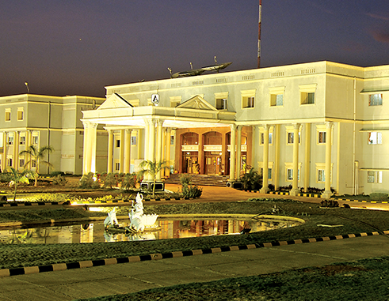

| Name | Harini |
| DOB | 09.06.2005 |
| LIVING | Chromepet |
SCHOOLING
Completed my schooling in ST.MARKS MATRICULATION HIGHER SECONDARY SCHOOL,which is situated in Chromepet.Right from my kindergarten to high schooling ,i did in same school.Got good score in my eleventh public examination and all came in school topper banner at both eleventh and twelth .Compeleted my twelth by securing a good score in my public exam of 585/600. Made myself ,my parents and my teachers proud.Setted up a good name in my frist stage of my life that is in my school.
| School Name | ST.MARKS MATRICULATION HIGHER SECONDARY SCHOOL |
| My 11th marks | 575/600 |
| My 12th marks | 585/600 |
Got seat in SRI SAIRAM ENGINEERING COLLEGE in BE COMPUTER SCIENCE ENGINNERING in counselling. Also got a scholarship for my good cutoff marks.Hope my college life will also be good and more wonderful than my school life and days. 
| College Name | SRI SAIRAM ENGINEERING COLLEGE |
| Course name | BE COMPUTER SCIENCE ENGINNERING |
| College location | West Tambaram |
To know about my colllege
CLICK HERE
SKILLS
TECHNICAL SKILLS:
Still only a learne rand will always be a learner of new things as i belive that a person who is always can succed and be in good designation in his oor her life.Intersted in coding and web development .Giving my best efforts till now.
NON TECHNICAL SKILLS:
Know to speak english ,tamil,telugu,and hindi.Completed abacus till grandmaster level.Loves drawing alot .I am an artist currently doing diplamo course in drawing side by side.